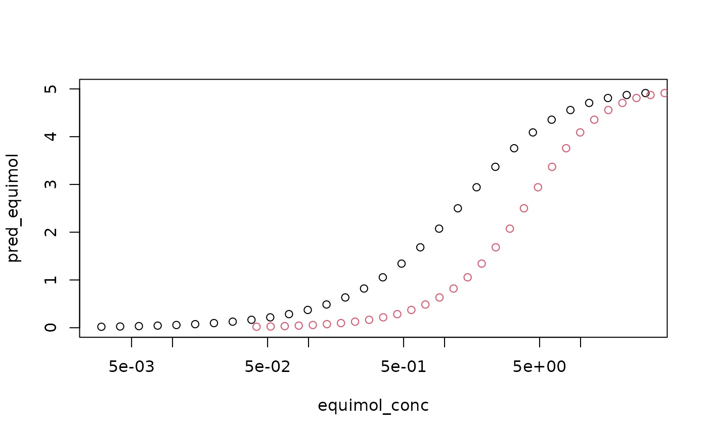
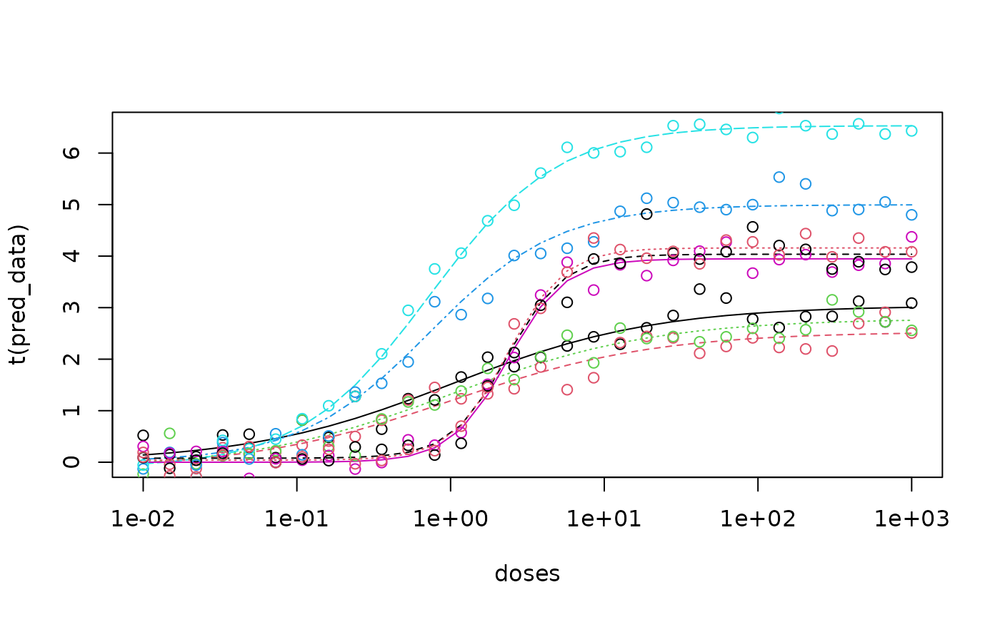

Simple Application of RGCA
Daniel Zilber
Source:vignettes/articles/Simple_Application.Rmd
Simple_Application.RmdSimple Usage of RGCA
While the method could be generalize to a variety of smooth, monotone dose response functions, our package is designed around the Hill function, \[f(x|a,b,c) = \frac{a}{1+\left(\frac{b}{x}\right)^{c}}\] The parameters are the sill (a), the EC50 (b), and the slope (c). Give these parameters and a cluster assignment vector, RGCA can create a calculator that predicts the mixture response given an input dose vector \((x_1,...,x_n)\). In the example below, there are three chemicals with known Hill parameters.
n_chems <- 3
sills <- c(3, 5, 4)
ec50_vec <- c(1, 0.75, 2.4)
slopes <- c(0.75, 1.1, 2.0)
# Rmax is used to scale IA across clusters, can copy sills
param_matrix <- as.matrix(cbind("a" = sills,
"b" = ec50_vec,
"c" = slopes,
"max_R" = sills))The cluster assignment vector is used to group the chemicals by similarity. If two chemicals are in the same group, they are assumed to be equivalent after adjusting for potency. If all chemicals are added to one group via, the prediction is equivalent to concentration additon (AKA dose addition, Loewe Additivity). If all chemicals are added to separate groups, the prediction is equivalent to independent action (AKA response addition, Bliss independence).
# Example 1: concentration addition
cluster_assign_vec <- c(1, 1, 1)
# Example 2: independent action
cluster_assign_vec <- c(1, 2, 3)
# A random cluster
cluster_assign_vec <- c(1, 2, 1)
# create a calculator to predict response given concentration
mix_pred <- mix_function_generator(param_matrix, cluster_assign_vec)To create a mixture, we need to specify the concentration of each chemical.
# generate mix concentrations: each row of the matrix is one dose of the mix
n_samps <- 30
# equipotent mixture: concentrations scaled by EC50
equipot_conc_matrix <- matrix(0, nrow = n_samps, ncol = n_chems)
# equimolar mixture: equal concentration of all chemicals
equimol_conc_matrix <- matrix(0, nrow = n_samps, ncol = n_chems)
# generate concentrations on the log scale
for (chem_idx in 1:n_chems) {
equipot_conc_matrix[, chem_idx] <-
ec50_vec[chem_idx] / (10^seq(2, -1, length.out = n_samps))
equimol_conc_matrix[, chem_idx] <-
1 / (10^seq(3, -1, length.out = n_samps))
}
#create the mixture concentration vector for plotting
equipot_conc <- rowSums(equipot_conc_matrix)
equimol_conc <- rowSums(equimol_conc_matrix)
# Apply the pediction function to the concentrations of interest
pred_equipot <- apply(equipot_conc_matrix,
MARGIN = 1,
FUN = function(x) mix_pred(x))
pred_equimol <- apply(equimol_conc_matrix,
MARGIN = 1,
FUN = function(x) mix_pred(x))Now we can plot the two predicted mixture responses.
plot(equimol_conc, pred_equimol, log = "x", ylim = c(0, 5))
points(equipot_conc, pred_equimol, col = 2) ## Fitting Dose Response Curves In the example above, we assume the parameters are known. If you have raw data for the individual chemical dose responses and want to fit the random effect model that we describe in our manuscript, the RGCA package has a built-in Bayesian MCMC fitting routing. Our function is designed to fit the Hill model described earlier with random effects (u, v) for the replicates: \[f(x |a,b,c) = \frac{a + u}{1+\left(\frac{b}{x}\right)^{c}}+ v + \epsilon\] The random effects allow for the replicates to have different responses by either adjusting the maximum effect (u) or by adjusting the minimum effect (v). Three pieces of data are needed: the responses, the doses, and a list of the replicates. We will sample curves using the specified parameters.
set.seed(123)
replicate_sets = list(c(1,2,3), c(4,5), c(6,7,8))
n_repls = max(unlist(replicate_sets))
doses = 1/ (10^seq(2, -3, length.out = n_samps))
Cx = matrix(doses, nrow = n_repls, ncol = n_samps, byrow = T)
# specify which rows of the data will correspond to which parameter
data = matrix(0, nrow = n_repls, ncol = n_samps)
#iterate over the parameter sets
for(rep_idx in seq_along(replicate_sets)){
# iterate over replicates
for(row_idx in replicate_sets[[rep_idx]]){
hill_params <- param_matrix[rep_idx,1:3]
# add random effect for sill
samp_sd_u = ifelse(row_idx == replicate_sets[[rep_idx]][1], 0, 1)
hill_params[['a']] <- hill_params[['a']] + rnorm(1, sd=samp_sd_u)
data[row_idx,] <- sapply(doses, FUN = function(d) {
do.call(hill_function, as.list(c(hill_params, conc = d)))
})
}
}
# now we add iid noise to simulate observations
noisy_data = data + matrix(rnorm(length(data), sd = 0.25), nrow = 8)The output is plotted and looks reasonable.
matplot(doses,t(data), type = "l", log = "x")
matplot(doses, t(noisy_data), type = "p",add = T, pch = 1) Now we can run our custom MCMC script to fit the data.
Now we can run our custom MCMC script to fit the data.
RE_mcmc_chains = RE_MCMC_fit(y_i = noisy_data,
Cx = Cx,
replicate_sets = replicate_sets)We use a helper function to extract the relevant parameters and compare to the true parameters.
RE_params = pull_summary_parameters(RE_mcmc_chains, summry_stat = median)
print(RE_params)## $sill_params
## [1] 3.039055 4.997729 3.947410
##
## $sill_sd
## [1] 0.07896465 0.06644112 0.06192497
##
## $ec50_params
## [1] 1.0168967 0.7195774 2.3454213
##
## $ec50_stdev
## [1] 0.16024360 0.04082689 0.09366453
##
## $u_RE_params
## [1] 0.00000000 -0.37343283 -0.11834004 0.00000000 1.64234934 0.00000000
## [7] 0.01136244 0.17092552
##
## $v_RE_params
## [1] 0.00000000 -0.13420422 -0.13471061 0.00000000 -0.10752350 0.00000000
## [7] 0.07774817 0.04011637
##
## $u_RE_sd_params
## [1] 0.5009757 2.1398733 0.3794902
##
## $v_RE_sd_params
## [1] 0.3948315 0.5540349 0.3663125
##
## $slope_params
## [1] 0.6551344 1.0399488 2.3618687Note that in addition to extracting the point estimates of the parameters (using the median by default), the standard deviations are also extracted. They are not used here, but can provide uncertainty quantification by sampling values and plotting the resulting curves.
fitted_params = as.matrix(cbind("a" = RE_params$sill_params,
"b" = RE_params$ec50_params,
"c" = RE_params$slope_params))
u_pars = RE_params$u_RE_params
v_pars = RE_params$v_RE_params
pred_data = data*0
for(rep_idx in seq_along(replicate_sets)){
# iterate over replicates
for(row_idx in replicate_sets[[rep_idx]]){
hill_params <- fitted_params[rep_idx,]
# add random effect for sill
hill_params[['a']] <- hill_params[['a']] + u_pars[row_idx]
pred_data[row_idx,] <- sapply(Cx[rep_idx,], FUN = function(d) {
do.call(hill_function, as.list(c(hill_params, conc = d)))
}) + v_pars[row_idx]
}
}
matplot(doses,t(pred_data), type = "l", log = "x"); matplot(doses, t(noisy_data), type = "p",add = T, pch = 1)